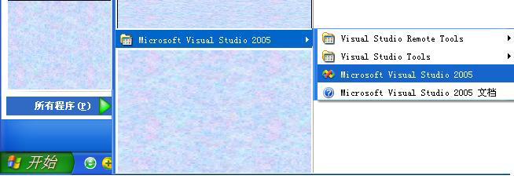
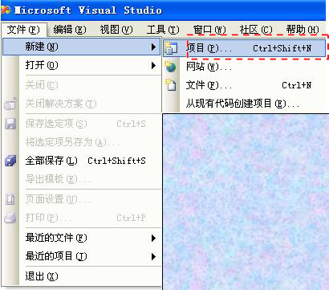
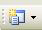
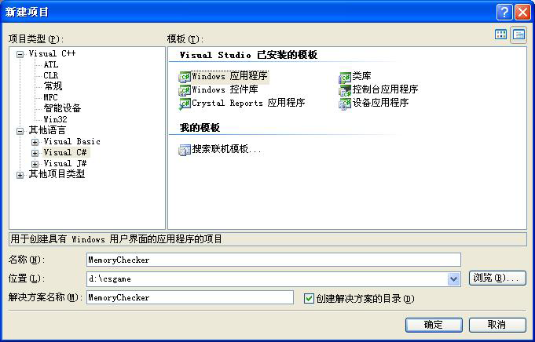
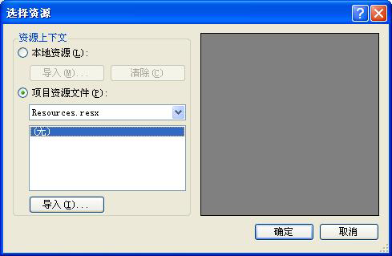
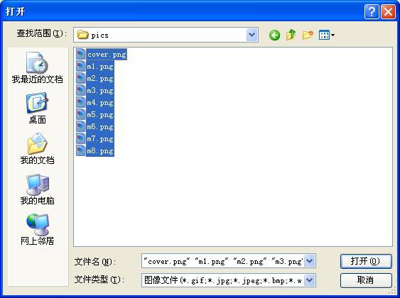
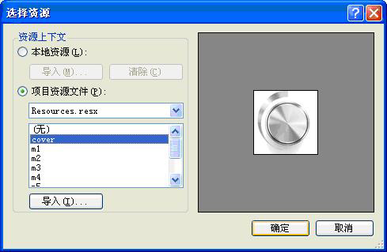
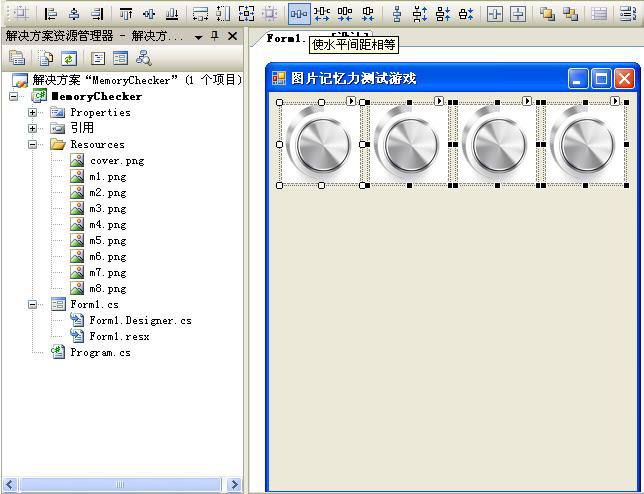
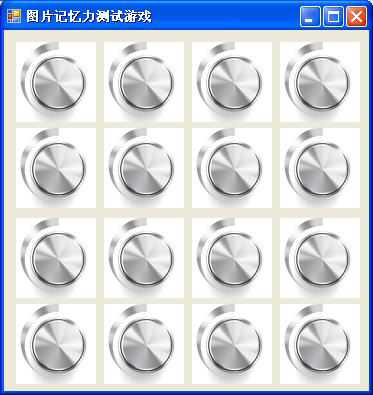

1) 启动Microsoft Visual Studio，介绍3种方法。
i. Windows 开始->所有程序->Microsoft Visual Studio 2005->Microsoft Visual Studio，如图CG-1所示。

ii. 或： 点击Windows桌面的Microsoft Visual Studio 快捷键
iii. 或： 如果是改进现有项目，可以通过双击现有项目中的解决方案文件（*.sln），从而启动Microsoft Visual Studio，并打开该项目。
2) 新建项目。分两步。
第一步，使弹出新建对话框。介绍3种方法。i. 选中菜单文件->新建->项目，如图CSG 2所示。

ii. 或：点击工具栏中的图标。

iii. 或：快捷键 ctrl+shift+N。该快捷键可在菜单中查看，如图CSG 2中红线框所示。
第二步，在弹出的新建项目对话框中，如图CSG 4所示，选择项目类型的语言为[Visual C#]，模板为[Windows 应用程序]，设置项目名称为“MemoryChecker”、位置为“d:\csgame”，此时解决方案名称自动为“MemoryChecker”。然后点击确定按钮，就完成了新建工作。
1) Name: pb1
2) Size: 80,80 （和准备的图片大小一样）
3) Image:
i. 点击输入框左边的省略号按钮…，弹出选择资源对话框，如图CSG 14所示。

ii. 点击导入按钮，在打开的文件对话框中选择放置图片的目录“D:\csgame\pics”,并选中所有图片，如图CSG 15所示。点击打开按钮回到选择对话框，如图CSG 16所示，并在其中选择“cover”，点击确认按钮，回到Form1.cs设计界面。




1) 在代码编辑器中可用的Windows 常用快捷键
| 快捷键 | 功能 | Ctrl+z | 取消 | Ctrl+c | 复制 | Ctrl+v | 粘贴 | home | 行首 | end | 行尾 | Ctrl+home | 页首 | Ctrl+end | 页尾 | tab 缩进 |
2) 集成开发环境IDE一般都会提供多种方法，如菜单、快捷键、工具栏、右键菜单让开发者使用某一项任务。它们各有长短之处。
i. 相对来说，鼠标+菜单是最慢的，例如，鼠标要在菜单上移动3次，并点击一次才能打开“新键项目”对话框；而点击工具栏上的按钮或快捷键只需要一次即可打开。
ii. 初学者可以记住一些常用的快捷键，例如，经常要运行和调试程序，如果使用快捷键，书写代码的手就无须离开键盘，将比其他方式快捷准确。
iii. 如果正好在用鼠标，就尽量使用右键菜单和工具栏上的按钮，例如，在窗体布局设计时，工具栏上的按钮就比较方便。
iv. 另一方面，菜单对于初学者来说，是非常齐全的一个导航系统，可以了解该系统可以做哪些事情，在忘记快捷键的时候，可以通过菜单查询，例如，初学者经常会把某个窗口关闭或打不开， 就可以到视图菜单下找找看。
3) 书写属性和方法的习惯：
i. 在书写代码时，写出一个变量后，尽量使用“.”运算符将可选属性和方法列出来，并通过继续书写前几个字母进行搜索，然后用“Enter”回车键选择找到的属性或方法。
ii.在书写代码时，碰到可以重复的内容， 可以一手鼠标，一手快捷键，两手并用提高效率。比如连续设置某个组件对象的属性，可以在第一次书写好后，右手将其鼠标双击选中，左手用“ctrl+c”进行复制，然后右手再将鼠标光标移动到下一个位置，左手用“ctrl+v”进行粘贴。
4) 组件的属性以及如何取值在属性设置页中可以方便地查看到。例如， 图片控件PictureBox 的Image 属性，在代码编辑视图赋值的时候可能会不知道如何让一个图片控件(ie:pb1)显示把一个图片资源(ie:m1.png)，则可以回到设计视图，浏览该图片控件的属性，找到Image属性（如果没有阅读过文档或其他教材，可以通过英文属性的意思来猜测再进行验证），然后查看其取值为 (MemoryChecker.Properties.Resources.cover)，分析其组成可知赋值的语句为。
pb1.Image = MemoryChecker.Properties.Resources.cover ;
其中pb1是指控件的名称，cover是图片在资源中的名称。5) 建议安装MSDN，它是初学者最好的向导和助手，也是入门以后开发旅途中的良伴。如果要查找满足特定需求的组件、属性、方法等，查MSDN能获得比较全面、精确的说明和示例帮助。.net超越曾经的桌面之王delphi 的一大方面，就是提供了强大的、细致的语言的说明文档MSDN。初学者还可以学习MSDN中的一些示例，包括其代码的书写规范。